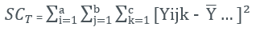

Méthode de calcul ANOVA selon MSA 4th
Synopsis
1ère étape : ANOVA à effets aléatoires
Dans un premier temps, il faut utiliser une ANOVA (Analysis of Variance) à effets aléatoires. L’objectif est de déterminer si l’interaction opérateur*pièce est significative car comme expliqué dans le schéma les méthodes de calcul sont différentss.
Soit Yijr représentant la mesure de l’opérateur i pour la pièce j lors de la répétition r. On considère que l’on a : Yijr = µ + αi + βi + (αβ)ij + εijr
- µ représente la moyenne de l’ensemble des valeurs ;
- αi représente l’effet (ou biais) dû à l’opérateur i ;
- βi représente l’effet dû à la pièce j ;
- (αβ)ij représente l’effet dû à la l’interaction opérateur/pièces
- εijr représente l’erreur distribuée normalement avec une moyenne de 0 et une variance de σ²ε
Notations :
- a nombre d’opérateurs (a=2 dans l’exemple) ;
- b nombre de pièces (b=10 dans l’exemple) ;
- c nombre de répétitions de mesures (n=2 dans l’exemple)
- Yijk représente la mesure de l’opérateur i, sur la pièce j ; pour la kième répétition ;
- Y… = moyenne générale = ;
- représente la notation abrégée de ;
 représente la notation
représente la notation
Rappelons que l’analyse de la variance part de la décomposition de la somme totale des carrés des écarts de toutes les observations :
SCT = SCO + SCP + SCOP + SCR avec :
- Somme des carrés totale : 
- Somme des carrés opérateurs :
- Somme des carrés pièces :
- Somme des carrés interactions :
La table ANOVA s’écrit de la manière suivante :
En cas d’interaction non significative (p > 0.05), on fusionne l’interaction avec la dispersion résiduelle, les ratios MCR, F0 et F1 se calculent alors par la relation :
2ème étape : Gage R&R
1ère sous partie : Interaction Opérateur*Pièce non significative
Si l’interaction n’est pas significative les calculs de la GRR sont les suivants :, il faut ensuite tronquer le résultat à l’entier. Attention les calculs indiqués en orange peuvent être impossibles dans le cas où le résultat de la soustraction serait négatif. Si cela se produit on considère le résultat comme étant 0.
2ème sous partie : Interaction Opérateur*Pièce significative
Si l’interaction est significative les calculs de la GRR sont les suivants :, il faut ensuite tronquer le résultat à l’entier. Attention les calculs indiqués en orange peuvent être impossibles dans le cas où le résultat de la soustraction serait négatif. Si cela se produit on considère le résultat comme étant 0.
Interprétation :
Voici le tableau répertoriant les seuils généralement utilisés pour qualifier le moyen de mesure.